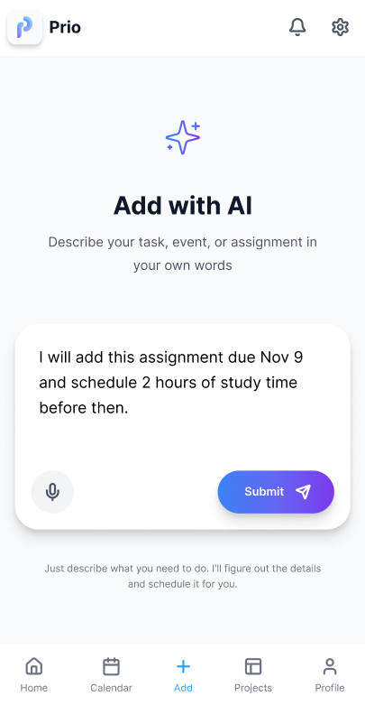
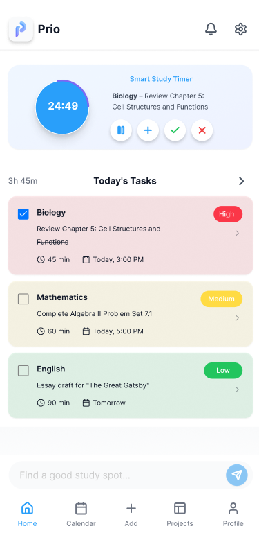
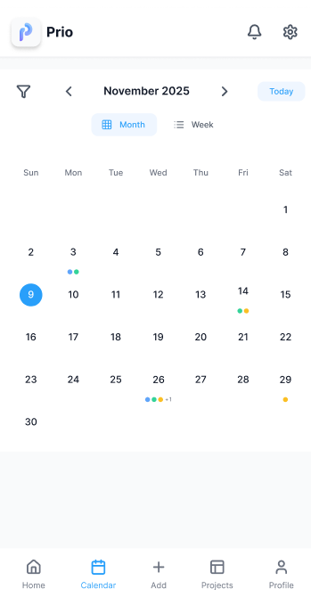
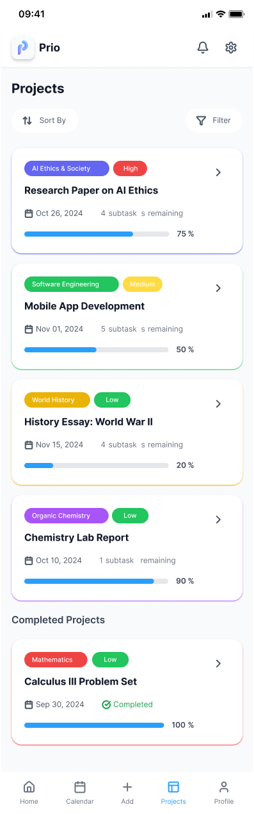

Prio isn't trying to do everything. It does exactly what students need — and nothing more.
No forms. No dropdowns. No categories to memorize. Just type what you'd say out loud — and Prio figures out the rest.
"Soccer practice every Monday 3–5pm and 4:30–5 on Tuesdays." Done.
"Calc exam next Thursday, super hard, probably 4 hours of studying." Done.
Even updates work the same way: "My English essay got moved to Wednesday."
The AI identifies what type of event it is, fills in every detail, estimates your workload, and confirms with you before saving a thing. You're always in control.


Every day, Prio calculates exactly what you need to work on — and puts it in the right order. Tasks are ranked by due date, difficulty, and how much time you have left today.
Check something off and the timer adjusts. Running short on time? Low-priority work moves itself to tomorrow. You just focus on the task in front of you.
It works like a personal assistant who manages your schedule in real time — except it fits in your pocket and never takes a day off.
Prio's built-in timer isn't just a countdown. It works through your whole task list automatically. Start it, and it counts down the time for your first task. Finish? It moves to the next one.
Need more time on something? Tap +. Finished early? Hit the check — Prio crosses it off and shrinks the remaining time accordingly.
When the timer isn't running, it collapses into a small, unobtrusive card so your task list stays front and center. Expand it when you're ready to focus.

The Prio calendar isn't a wall of due dates. Every subject has its own color — English might be green, Math might be red — and each day shows colored dots for what's coming. Three assignments on Thursday? Three dots.
Tap any day and a summary slides up from the bottom — every task, total workload time, and a "Plan this day" button that takes you straight to the AI input screen.
Heavy weeks show a subtle blue tint so you can spot them coming before they sneak up on you. Light weeks look light. No surprises.
Research papers. Science fair projects. Group presentations. These don't fit into a single task — they need a plan.
When you add a long-term project, Prio's AI automatically suggests subtasks with individual deadlines and time estimates. Each subtask shows up on your daily task list at the right time, so you're never staring down a 10-page paper the night before it's due.
The Projects Board shows every active project at a glance — how far along you are, how much time is left, and exactly what's next.
